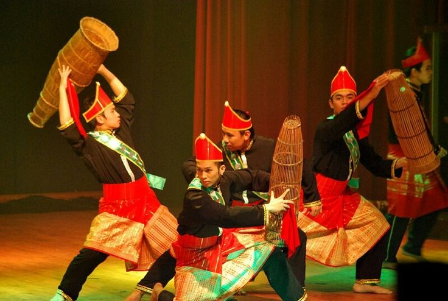

Infografik: Adat Bapukung (Masyarakat Banjar Perak)
- Etnik & Lokasi: Diamalkan oleh masyarakat Melayu Banjar di daerah Bagan Serai, Perak.
- Definisi: Adat tradisional menidurkan bayi dalam posisi duduk dengan badan diikat kemas menggunakan kain hingga paras tengkuk di dalam buaian.
- Tujuan Teknikal: Memberikan ketenteraman kepada bayi berusia 3 hingga 4 bulan yang kerap meragam akibat perut kembung atau perubahan persekitaran.
- Falsafah Budaya & Agama: Melambangkan harapan ibu bapa agar anak menjadi soleh/solehah melalui alunan Lagu Bapukung yang sarat dengan selawat serta kisah sejarah kehidupan Nabi Muhammad SAW.
- Peralatan Utama: Buaian (kain sarung/batik), tali, dan Kain Haduk atau Ijuk sebagai pengikat selamat pada leher/badan bayi.
- Waktu Pelaksanaan: Diadakan pada waktu siang bersempena konsep Qailulah (tidur sebentar 10-30 minit sebelum waktu Zohor) yang merupakan amalan Sunnah.
Kuiz Interaktif: Adat Bapukung (20 Soalan)
1. Di manakah kawasan lokaliti utama amalan adat Bapukung di negeri Perak?
2. Apakah nama etnik yang mengamalkan tradisi Bapukung ini?
3. Bagaimanakah posisi fizikal bayi semasa diletakkan di dalam buaian adat Bapukung?
4. Apakah peralatan khas yang digunakan untuk mengikat leher/badan bayi supaya posisinya selamat?
5. Pada usia berapakah adat Bapukung ini secara teknikalnya mula berfungsi untuk menenteramkan bayi?
6. Apakah punca fizikal utama yang membuatkan bayi usia 3-4 bulan kerap menangis menurut nota?
7. Apakah elemen keagamaan yang diselang-selikan semasa mendendangkan Lagu Bapukung?
8. Apakah konsep masa tidur pertengahan siang yang melandasi falsafah waktu adat Bapukung?
9. Berapakah tempoh masa yang disarankan untuk tidur Qailulah mengikut sunnah?
10. Siapakah yang biasanya menyanyikan Lagu Bapukung secara beramai-ramai semasa adat berlangsung?
11. Lagu Bapukung bertindak sebagai media penyampaian informasi penting tentang apa?
12. Apakah kain yang lazimnya digunakan untuk membuat buaian utama?
13. Di manakah kedudukan kedua-dua kaki bayi semasa berada dalam buaian Pukong?
14. Apakah fungsi utama ikatan Kain Haduk/Ijuk pada badan bayi?
15. Dialek bahasa apakah yang digunakan dalam lirik lagu Bapukung?
16. Di manakah kedudukan struktur utama buaian berhias digantung?
17. Apakah langkah tatacara pertama sebaik sahaja buaian disediakan di tengah rumah?
18. Apakah jenis kualiti ikatan Kain Haduk pada tubuh bayi?
19. Upacara diakhiri dengan aktiviti apa bagi meraikan tetamu yang hadir?
20. Selain aspek kesihatan dan agama, apakah fungsi sosial tradisi Bapukung dalam komuniti?
Infografik: Adat Menyambut Menantu Perempuan (Kelantan)
- Definisi Istilah: Berasal daripada tindakan wakil pihak lelaki menjemput dan mengambil pengantin perempuan selepas berada beberapa hari di rumah pihak perempuan. Berperanan mengalu-alukan ahli baharu dalam keluarga.
- Sifat Majlis: Dilaksanakan secara tertutup, selaras dengan ajaran Islam dan hanya melibatkan ahli keluarga terdekat sahaja.
- Tujuan & Peranan: Berfungsi khusus demi menjamin dan memastikan hubungan silaturrahim antara kedua-dua belah pihak pengantin terjalin erat.
- Istilah Tempatan: Proses perarakan rombongan waris dari rumah pengantin perempuan ke rumah pengantin lelaki disebut istilah blarok (berarak).
- Atur Cara: Dimulai dengan bacaan doa kesyukuran diikuti dengan aktiviti jamuan makan bersama.
Kuiz Interaktif: Menyambut Menantu (20 Soalan)
1. Adat menyambut menantu perempuan mengikut nota rujukan terkenal di negeri mana?
2. Apakah maksud utama istilah 'menyambut menantu'?
3. Mengapakah majlis adat ini umumnya dilaksanakan secara tertutup?
4. Siapakah yang membentuk kelompok utama jemputan dalam majlis adat ini?
5. Majlis adat menyambut menantu dimulakan dengan upacara apa?
6. Apakah tujuan sosial dan emosi utama pelaksanaan adat menyambut menantu?
7. Bilakah adat menyambut menantu ini kebiasaannya diadakan?
8. Apakah istilah dialek tempatan Kelantan yang digunakan untuk menggambarkan perbuatan berarak?
9. Siapakah yang bertindak mengiringi pengantin perempuan semasa proses berarak ke rumah lelaki?
10. Di manakah destinasi akhir perarakan adat menyambut menantu?
11. Apakah status amalan adat menyambut menantu pada hari ini berdasarkan nota?
12. Siapakah yang menjadi wakil utama datang menjemput pengantin perempuan pada mulanya?
13. Berapa lamakah tempoh pengantin berada di rumah perempuan sebelum dijemput?
14. Istilah 'sambut menantu' terbit daripada perbuatan apa secara fizikal?
15. Di manakah hidangan jamuan makan utama disajikan kepada rombongan pengantin perempuan?
16. Apakah komponen utama aktiviti selepas bacaan doa kesyukuran?
17. Mengapakah perarakan blarok dilakukan secara tertib?
18. Nilai Islam yang paling ditekankan dalam pelaksanaan bentuk majlis ini ialah apa?
19. Siapakah yang menganjurkan dan melaksanakan upacara sambutan ini?
20. Apakah intipati utama pengisian majlis ini selain makan?

Infografik: Tarian Alai Bubu (Kaum Bisaya Sabah)
- Etnik & Lokaliti: Milik etnik Bisaya yang mendiami daerah Beaufort (tebing Sungai Padas dan Sungai Klias, Sabah).
- Nama Lain: Terkenal dengan nama 'Main Lukah' dan 'Bubu Mengalai'. Lukah bermaksud perangkap ikan tradisional.
- Sejarah & Evolusi Versi:
• Versi 1: Mitos bubu menari lambang kesetiaan tradisi pagan (suami isteri mati masuk laut bersama).
• Versi 2: Pengganti Tarian Lesung (dihentikan selepas tragedi penari maut dihempap lesung). - Unsur Mistik Silam vs Status Moden: Dahulu melibatkan jampi serapah, kemenyan, dan kuasa roh supranatural. Sejak tahun 1980-an, unsur ilmu hitam ditinggalkan sepenuhnya hasil larangan Jabatan Agama Islam Sabah. Kini dipotretkan tulen sebagai seni persembahan budaya keraian sosial.
- Peralatan & Muzik: Bubu yang dipakaikan baju wanita (simbol roh). Muzik iringan terdiri daripada gambus dan ensembel gong Bagandang yang merangkumi Tagongo (kulintangan), Tatawak (gong kecil), dan Canang.
- Ciri Gerak Tari: Bersifat spontan mengikut interaksi penari dan audiens. Rentak laju (simbol kehadiran semangat) manakala rentak perlahan (ruang komunikasi pawang/Babalian).
Kuiz Interaktif: Tarian Alai Bubu (20 Soalan)
1. Tarian Alai Bubu merupakan tarian tradisional bagi etnik kaum apa?
2. Di manakah daerah lokaliti utama penempatan etnik Bisaya di Sabah mengikut teks?
3. Apakah nama lain bagi Tarian Alai Bubu?
4. Apakah maksud perkataan 'Lukah' dalam bahasa tempatan etnik Bisaya?
5. Apakah nama panggilan bagi individu yang berfungsi sebagai pawang atau perantara spiritual etnik Bisaya?
6. Mengapakah penggunaan elemen lesung dihentikan dalam sejarah versi kedua tarian?
7. Apakah komponen 'Salihid' yang diperkenalkan untuk menggantikan elemen lesung?
8. Sejak dekad bilakah amalan jampi serapah dan ilmu hitam ditinggalkan sepenuhnya?
9. Apakah badan rasmi negeri yang melarang penggunaan unsur spiritual mistik lama ini?
10. Apakah fungsi utama pakaian harian tradisional yang dikenakan pada objek Bubu?
11. Keseluruhan ensembel alat muzik pengiring secara kolektif dikenali dengan gelaran apa?
12. Apakah nama alat muzik tradisional sejenis Kulintangan dalam ensembel tersebut?
13. Tatawak merujuk kepada jenis instrumen muzik yang mana?
14. Bagaimanakah sifat bentuk variasi ragam gerak tari Alai Bubu dilaksanakan?
15. Apakah makna simbolik perubahan rentak muzik yang laju?
16. Apakah makna simbolik perubahan rentak muzik yang bertukar perlahan?
17. Bahan apakah yang dibakar dalam ritual lama untuk menjampi tubuh Bubu?
18. Apakah fungsi evolusi peranan moden tarian ini bagi kaum Bisaya sekarang?
19. Selain gambus, alat bertali apakah yang mengiringi tarian Alai Bubu?
20. Mantera lama yang dahulunya mengandungi jampi kini berfungsi sebagai apa dalam persembahan moden?